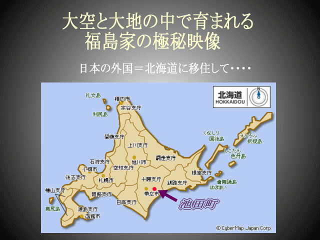
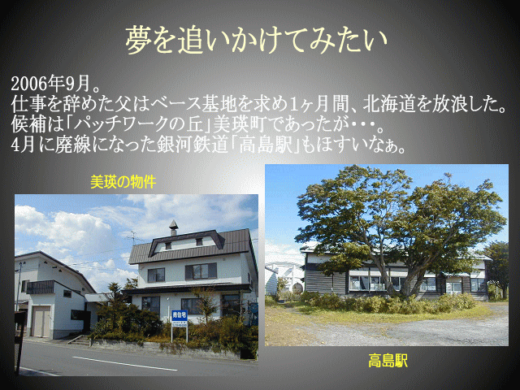
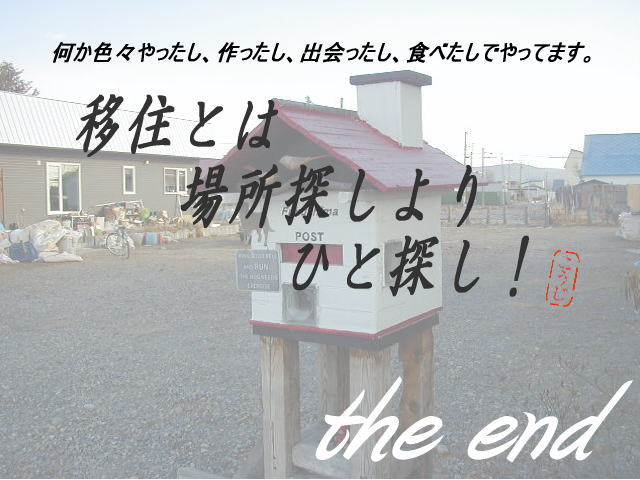
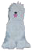

大阪から北海道・池田町へ。オーナー一家の移住ストーリー
大阪出身の福島浩司さんは、郵便局に約30年勤務したのち、家族と共に北海道へ移住。 元々は薬局だった建物をリフォームし、喫茶と旅宿「Do Luck 道楽」を開きました。 バイク愛好家で、旅人との語らいを大切にしています。

仕事を辞めた福島さんは、新しい拠点を求めて1ヶ月間、北海道を放浪しました。 候補地は「パッチワークの丘」で知られる美瑛町や、廃線になった銀河鉄道「高島駅」の建物など。 最終的にたどり着いたのが、この池田町でした。

北海道には「純」と「蛍」という2頭の犬を連れてきました。名付け親は大ファンだったドラマ「北の国から」の登場人物から。 現在はオールドイングリッシュシープドッグの純だけが、Do Luckで過ごしています。

福島さんご夫妻についての詳しいインタビューは、とほネットワーク旅人宿の会の紹介記事でも読むことができます。
